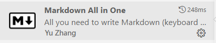
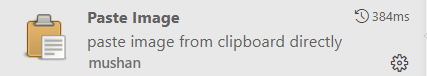
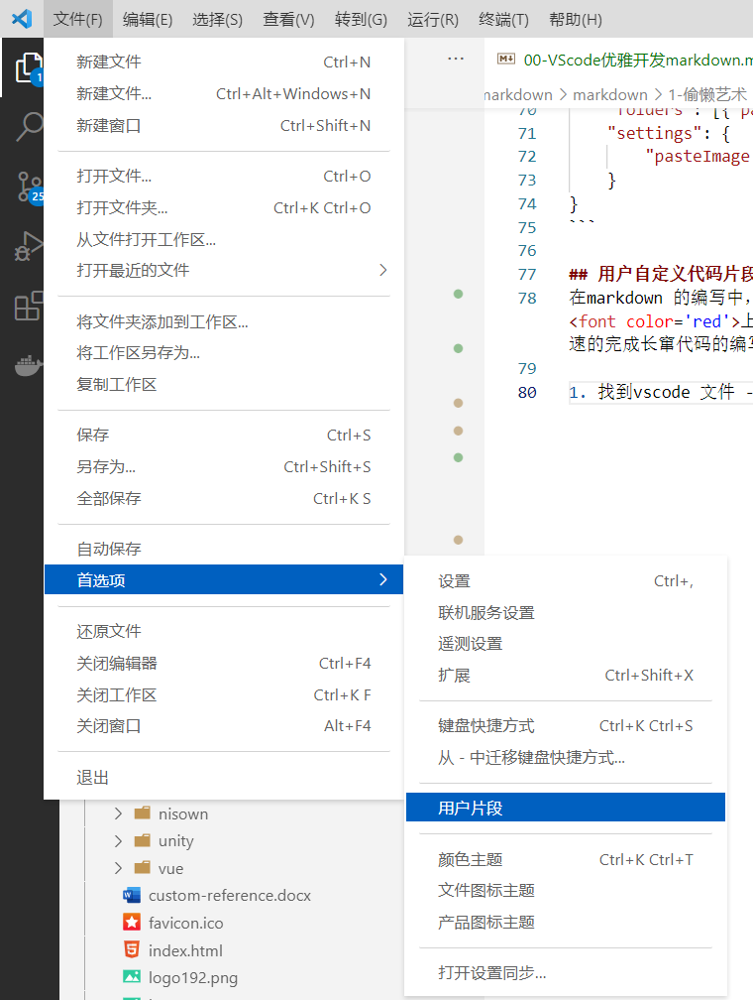
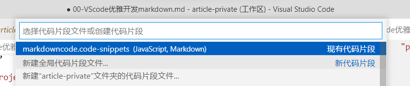
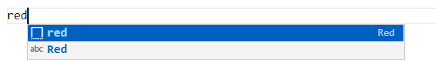

Markdown 是一种简单的标记语义，可以方便富文本的编辑。Markdown可以方便的被解析为HTML，在页面上展示，支持多种插件的嵌入，如使用Katex可以让markdown支持数学公式，也可以插入html代码，丰富markdown 的表达。
本文将介绍vscode种常用的 Markdown插件 ，及其配置。并介绍如何使用 用户自定义代码片段（snippets） 来快捷的添加常用表达。
对于编辑markdown来说，以下两个插件就绰绰有余了。第一个是Markdown All in One,其集成了一款优秀的Markdown编辑器的很多功能，比如方便的快捷键，自动生成目录，格式化表格等。第二个是Paste Image 这是一个复制粘贴图片到markdown的工具。


功能：
常用操作的快捷键
支持目录
支持同步预览(ctrl+shift+v)
轻松转换html和pdf文件
可格式化table(alt+shift+f)和task list(alt+c)
支持特殊数学符号渲染
常用快捷键
粗体 ctrl+b
斜体 ctrl+i
删除线 alt+s
切换数学环境 ctrl+m
同步预览 ctrl+shift+v
检查任务列表项 alt+c
格式化表格 alt+shift+f
格式化任务列表 alt+c
常用命令
先按F1进入VSCode命令面板
自动创建目录 Create Table of Contents
更新目录 Update Table of Contents
添加/更新标题编号 Add/Update Section numbers
在编写md需要插入图片，按下快捷键ctrl + alt + v，这个插件就可以将粘贴板的图片保存到磁盘，并生成图片链接。插件的使用需要在setting.json里配置图片存储的位置。
"pasteImage.path": "${projectRoot}/img" // img是存放图片的文件夹，${projectRoot}表示项目的根路径
也可以在工作区配置文件（.code-workspace）中加入这条配置,例如
// my-project.code-workspace
{
"folders": [{"path": ".."}],
"settings": {
"pasteImage.path": "${projectRoot}/image"
}
}
在markdown 的编写中，往往需要有一些常用的操作，但是在markdown中需要复杂的代码，比如给文字 上色，添加表格等，这时我们可以使用自定义代码段的方式来创建模板快速的完成长窜代码的编写。
找到vscode 文件 -> 首选项 -> 用户片段 ， 如下图所示

选择新建全局代码片段，或者新建“xxxx”文件夹的代码片段

编写用户自定义代码，例如
这段代码添加了两个子定义代码，一个是输入
red解析为<font color='red'></font>, 一个是输入space解析为  (表示两个空格)，
{
"Red": {
"prefix": "red", // 快捷键
"scope": "markdown", // 设置只在markdown文件中提示，如果需要在多种文件中提示，可以使用, 隔开
"body": [
"<font color='red'>$1</font>" // 解析结果，$1,表示光标位置，还有$2,$3 ...
],
"description": "快速生成红色字体" // 描述
},
"Space": {
"prefix": "space",
"scope": "markdown",
"body": [
"  "
],
"description": "段首缩进"
}
}
效果如下，点击red以后就会变成<font color='red'>|</font>，

如果没有产生上面的效果，需要在设置里，加上markdown的智能提示。
"[markdown]": {"editor.quickSuggestions": true}
或者在工作区配置文件（.code-workspace）中加入这条配置,例如
{
"folders": [{"path": ".."}],
"settings": {
"pasteImage.path": "${projectRoot}/image",
"[markdown]": {"editor.quickSuggestions": true}
}
}
https://www.cnblogs.com/liangdiaonumberone/p/14191994.html